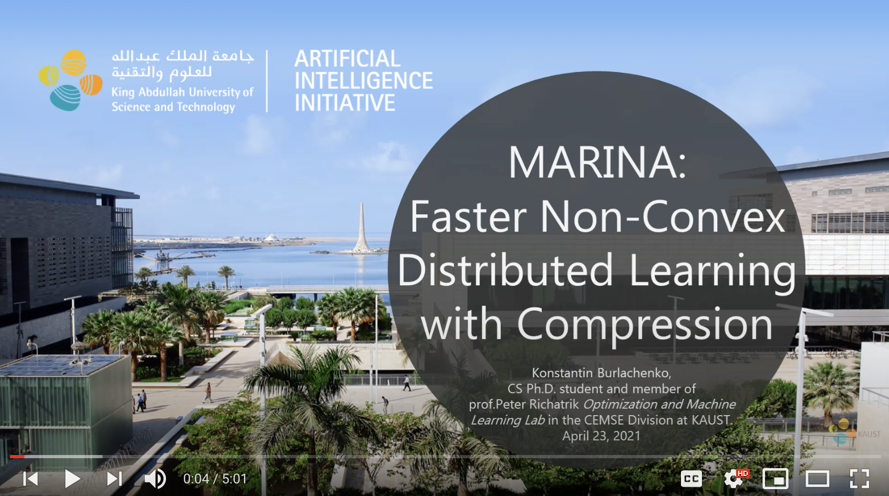

May 10, 2021
Papers Accepted to ICML 2021
We've had several papers accepted to the International Conference on Machine Learning (ICML 2021), which will be run virtually during July 18-24, 2021. Here they are:
1) "MARINA: Faster Non-convex Distributed Learning with Compression" - joint work with Eduard Gorbunov, Konstantin Burlachenko and Zhize Li.
Abstract: We develop and analyze MARINA: a new communication efficient method for non-convex distributed learning over heterogeneous datasets. MARINA employs a novel communication compression strategy based on the compression of gradient differences which is reminiscent of but different from the strategy employed in the DIANA method of Mishchenko et al (2019). Unlike virtually all competing distributed first-order methods, including DIANA, ours is based on a carefully designed biased gradient estimator, which is the key to its superior theoretical and practical performance. To the best of our knowledge, the communication complexity bounds we prove for MARINA are strictly superior to those of all previous first order methods. Further, we develop and analyze two variants of MARINA: VR-MARINA and PP-MARINA. The first method is designed for the case when the local loss functions owned by clients are either of a finite sum or of an expectation form, and the second method allows for partial participation of clients -- a feature important in federated learning. All our methods are superior to previous state-of-the-art methods in terms of the oracle/communication complexity. Finally, we provide convergence analysis of all methods for problems satisfying the Polyak-Lojasiewicz condition.
More material:
- Short 5 min YouTube talk by Konstantin
- Long 70 min YouTube talk by Eduard delivered at the FLOW seminar
- poster
2) "PAGE: A Simple and Optimal Probabilistic Gradient Estimator for Nonconvex Optimization" - joint work with Zhize Li, Hongyan Bao, and Xiangliang Zhang.
Abstract: In this paper, we propose a novel stochastic gradient estimator---ProbAbilistic Gradient Estimator (PAGE)---for nonconvex optimization. PAGE is easy to implement as it is designed via a small adjustment to vanilla SGD: in each iteration, PAGE uses the vanilla minibatch SGD update with probability p or reuses the previous gradient with a small adjustment, at a much lower computational cost, with probability 1−p. We give a simple formula for the optimal choice of p. We prove tight lower bounds for nonconvex problems, which are of independent interest. Moreover, we prove matching upper bounds both in the finite-sum and online regimes, which establish that PAGE is an optimal method. Besides, we show that for nonconvex functions satisfying the Polyak-Łojasiewicz (PL) condition, PAGE can automatically switch to a faster linear convergence rate. Finally, we conduct several deep learning experiments (e.g., LeNet, VGG, ResNet) on real datasets in PyTorch, and the results demonstrate that PAGE not only converges much faster than SGD in training but also achieves the higher test accuracy, validating our theoretical results and confirming the practical superiority of PAGE.
More material:
3) "Distributed Second Order Methods with Fast Rates and Compressed Communication" - work of Rustem Islamov and Xun Qian.
Abstract: We develop several new communication-efficient second-order methods for distributed optimization. Our first method, NEWTON-STAR, is a variant of Newton's method from which it inherits its fast local quadratic rate. However, unlike Newton's method, NEWTON-STAR enjoys the same per iteration communication cost as gradient descent. While this method is impractical as it relies on the use of certain unknown parameters characterizing the Hessian of the objective function at the optimum, it serves as the starting point which enables us design practical variants thereof with strong theoretical guarantees. In particular, we design a stochastic sparsification strategy for learning the unknown parameters in an iterative fashion in a communication efficient manner. Applying this strategy to NEWTON-STAR leads to our next method, NEWTON-LEARN, for which we prove local linear and superlinear rates independent of the condition number. When applicable, this method can have dramatically superior convergence behavior when compared to state-of-the-art methods. Finally, we develop a globalization strategy using cubic regularization which leads to our next method, CUBIC-NEWTON-LEARN, for which we prove global sublinear and linear convergence rates, and a fast superlinear rate. Our results are supported with experimental results on real datasets, and show several orders of magnitude improvement on baseline and state-of-the-art methods in terms of communication complexity.
More material:
- Short 5 min YouTube talk by Rustem
- Long 80 min YouTube talk by myself delivered at the FLOW seminar
- my FLOW talk slides
- poster
4) "Stochastic Sign Descent Methods: New Algorithms and Better Theory" - joint work with Mher Safaryan.
Abstract: Various gradient compression schemes have been proposed to mitigate the communication cost in distributed training of large scale machine learning models. Sign-based methods, such as signSGD, have recently been gaining popularity because of their simple compression rule and connection to adaptive gradient methods, like ADAM. In this paper, we analyze sign-based methods for non-convex optimization in three key settings: (i) standard single node, (ii) parallel with shared data and (iii) distributed with partitioned data. For single machine case, we generalize the previous analysis of signSGD relying on intuitive bounds on success probabilities and allowing even biased estimators. Furthermore, we extend the analysis to parallel setting within a parameter server framework, where exponentially fast noise reduction is guaranteed with respect to number of nodes, maintaining 1-bit compression in both directions and using small mini-batch sizes. Next, we identify a fundamental issue with signSGD to converge in distributed environment. To resolve this issue, we propose a new sign-based method, Stochastic Sign Descent with Momentum (SSDM), which converges under standard bounded variance assumption with the optimal asymptotic rate. We validate several aspects of our theoretical findings with numerical experiments.
More material:
{kind=link}
5) "ADOM: Accelerated Decentralized Optimization Method for Time-Varying Networks" - joint work with Dmitry Kovalev, Egor Shulgin, Alexander Rogozin and Alexander Gasnikov.
Abstract: We propose ADOM - an accelerated method for smooth and strongly convex decentralized optimization over time-varying networks. ADOM uses a dual oracle, i.e., we assume access to the gradient of the Fenchel conjugate of the individual loss functions. Up to a constant factor, which depends on the network structure only, its communication complexity is the same as that of accelerated Nesterov gradient method (Nesterov, 2003). To the best of our knowledge, only the algorithm of Rogozin et al. (2019) has a convergence rate with similar properties. However, their algorithm converges under the very restrictive assumption that the number of network changes can not be greater than a tiny percentage of the number of iterations. This assumption is hard to satisfy in practice, as the network topology changes usually can not be controlled. In contrast, ADOM merely requires the network to stay connected throughout time.
More material:
April 29, 2021
Paper Accepted to IEEE Transactions on Information Theory
Our paper Revisiting randomized gossip algorithms: general framework, convergence rates and novel block and accelerated protocols, joint work with Nicolas Loizou, was accepted to IEEE Transactions on Information Theory.
April 28, 2021
KAUST Conference on Artificial Intelligence: 17 Short (up to 5 min) Talks by Members of my Team!
Today and tomorrow I am attending the KAUST Conference on Artificial Intelligence. Anyone can attend for free by watching the LIVE Zoom webinar stream. Today I have given a short 20 min talk today entitled "Recent Advances in Optimization for Machine Learning". Here are my slides:
I will deliver another 20 min talk tomorrow, entitled "On Solving a Key Challenge in Federated Learning: Local Steps, Compression and Personalization". Here are the slides:
More importantly, 17 members (research scientists, postdocs, PhD students, MS students and interns) of the "Optimization and Machine Learning Lab" that I lead at KAUST have prepared short videos on selected recent papers they co-athored. This includes 9 papers from 2021, 7 papers from 2020 and 1 paper from 2019. Please check out their video talks! Here they are:
A talk by Konstantin Burlachenko (paper):

A talk by Laurent Condat (paper):
A talk by Eduard Gorbunov (paper):

A talk by Filip Hanzely (paper):

A talk by Slavomir Hanzely:
A talk by Samuel Horvath:

A talk by Rustem Islamov:

A talk by Ahmed Khaled:

A talk by Dmitry Kovalev:

A talk by Zhize Li:
A talk by Grigory Malinovsky:

A talk by Konstantin Mishchenko:

A talk by Xun Qian:

A talk by Mher Safaryan:
A talk by Adil Salim:

A talk by Egor Shulgin:

A talk by Bokun Wang:

April 21, 2021
Area Editor for Journal of Optimization Theory and Applications
I have just become an Area Editor for Journal on Optimization Theory and Applications (JOTA), representing the area "Optimization and Machine Learning". Consider sending your best optimizaiton for machine learning papers to JOTA! We aim to provide fast and high quality reviews.
Established in 1967, JOTA is one of the oldest optimization journals. For example, Mathematical Programming was established in 1972, SIAM J on Control and Optimization in 1976, and SIAM J on Optimization in 1991.
According to Google Scholar Metrics, JOTA is one of the top optimization journals:

April 22, 2021
Talk at AMCS/STAT Graduate Seminar at KAUST
Today I gave a talk entitled "Distributed second order methods with fast rates and compressed communication" at the AMCS/STAT Graduate Seminar at KAUST. Here is the official KAUST blurb. I talked about the paper Distributed Second Order Methods with Fast Rates and Compressed Communication. This is joint work with my fantastic intern Rustem Islamov (KAUST and MIPT) and fantastic postdoc Xun Qian (KAUST).
April 19, 2021
New Paper
New paper out: "Random Reshuffling with Variance Reduction: New Analysis and Better Rates" - joint work with Grigory Malinovsky and Alibek Sailanbayev.
Abstract: Virtually all state-of-the-art methods for training supervised machine learning models are variants of SGD enhanced with a number of additional tricks, such as minibatching, momentum, and adaptive stepsizes. One of the tricks that works so well in practice that it is used as default in virtually all widely used machine learning software is {\em random reshuffling (RR)}. However, the practical benefits of RR have until very recently been eluding attempts at being satisfactorily explained using theory. Motivated by recent development due to Mishchenko, Khaled and Richt\'{a}rik (2020), in this work we provide the first analysis of SVRG under Random Reshuffling (RR-SVRG) for general finite-sum problems. First, we show that RR-SVRG converges linearly with the rate $O(\kappa^{3/2})$ in the strongly-convex case, and can be improved further to $O(\kappa)$ in the big data regime (when $n > O(\kappa)$), where $\kappa$ is the condition number. This improves upon the previous best rate $O(\kappa^2)$ known for a variance reduced RR method in the strongly-convex case due to Ying, Yuan and Sayed (2020). Second, we obtain the first sublinear rate for general convex problems. Third, we establish similar fast rates for Cyclic-SVRG and Shuffle-Once-SVRG. Finally, we develop and analyze a more general variance reduction scheme for RR, which allows for less frequent updates of the control variate. We corroborate our theoretical results with suitably chosen experiments on synthetic and real datasets.
April 14, 2021
Talk at FLOW
Today I am giving a talk entitled "Beyond Local and Gradient Methods for Federated Learning" at the Federated Learning One World Seminar (FLOW). After a brief motivation spent on bashing gradient and local methods, I will talk about the paper Distributed Second Order Methods with Fast Rates and Compressed Communication. This is joint work with my fantastic intern Rustem Islamov (KAUST and MIPT) and fantastic postdoc Xun Qian (KAUST).
The talk was recorded and is now available on YouTube:
April 13, 2021
Three Papers Presented to AISTATS 2021
We've had three papers accepted to The 24th International Conference on Artificial Intelligence and Statistics (AISTATS 2021). The conference will be held virtually over the next few days; during April 13-15, 2021. Here are the papers:
1. A linearly convergent algorithm for decentralized optimization: sending less bits for free!, joint work with Dmitry Kovalev, Anastasia Koloskova, Martin Jaggi, and Sebastian U. Stich.
Abstract: Decentralized optimization methods enable on-device training of machine learning models without a central coordinator. In many scenarios communication between devices is energy demanding and time consuming and forms the bottleneck of the entire system. We propose a new randomized first-order method which tackles the communication bottleneck by applying randomized compression operators to the communicated messages. By combining our scheme with a new variance reduction technique that progressively throughout the iterations reduces the adverse effect of the injected quantization noise, we obtain the first scheme that converges linearly on strongly convex decentralized problems while using compressed communication only. We prove that our method can solve the problems without any increase in the number of communications compared to the baseline which does not perform any communication compression while still allowing for a significant compression factor which depends on the conditioning of the problem and the topology of the network. Our key theoretical findings are supported by numerical experiments.

2. Local SGD: unified theory and new efficient methods, joint work with Eduard Gorbunov and Filip Hanzely.
Abstract: We present a unified framework for analyzing local SGD methods in the convex and strongly convex regimes for distributed/federated training of supervised machine learning models. We recover several known methods as a special case of our general framework, including Local-SGD/FedAvg, SCAFFOLD, and several variants of SGD not originally designed for federated learning. Our framework covers both the identical and heterogeneous data settings, supports both random and deterministic number of local steps, and can work with a wide array of local stochastic gradient estimators, including shifted estimators which are able to adjust the fixed points of local iterations for faster convergence. As an application of our framework, we develop multiple novel FL optimizers which are superior to existing methods. In particular, we develop the first linearly converging local SGD method which does not require any data homogeneity or other strong assumptions.

3. Hyperparameter transfer learning with adaptive complexity, joint work with Samuel Horváth and Aaron Klein, and Cedric Archambeau.
Abstract: Bayesian optimization (BO) is a data-efficient approach to automatically tune the hyperparameters of machine learning models. In practice, one frequently has to solve similar hyperparameter tuning problems sequentially. For example, one might have to tune a type of neural network learned across a series of different classification problems. Recent work on multi-task BO exploits knowledge gained from previous hyperparameter tuning tasks to speed up a new tuning task. However, previous approaches do not account for the fact that BO is a sequential decision making procedure. Hence, there is in general a mismatch between the number of evaluations collected in the current tuning task compared to the number of evaluations accumulated in all previously completed tasks. In this work, we enable multi-task BO to compensate for this mismatch, such that the transfer learning procedure is able to handle different data regimes in a principled way. We propose a new multi-task BO method that learns a set of ordered, non-linear basis functions of increasing complexity via nested drop-out and automatic relevance determination. Experiments on a variety of hyperparameter tuning problems show that our method improves the sample efficiency of recently published multi-task BO methods.
April 7, 2021
Talk at All Russian Seminar in Optimization
Today I am giving a talk at the All Russian Seminar in Optimization. I am talking about the paper Distributed Second Order Methods with Fast Rates and Compressed Communication, which is joint work with Rustem Islamov (KAUST and MIPT) and Xun Qian (KAUST).
The talk was recorded and uploaded to YouTube:

Here are the slides from my talk, and here is a poster that will son be presented by Rustem Islamov at the NSF-TRIPODS Workshop on Communication Efficient Distributed Optimization.
March 24, 2021
Mishchenko and Gorbunov: ICLR 2021 Outstanding Reviewer Award
Congratulations Konstantin Mishchenko and Eduard Gorbunov for receiving an Outstanding Reviewer Award from ICLR 2021! I wish the reviews we get for our papers were as good (i.e., insighful, expert and thorough) as the reviews Konstantin and Eduard are writing.
March 19, 2021
Area Chair for NeurIPS 2021
I will serve as an Area Chair for NeurIPS 2021, to be held during December 6-14, 2021 virtually ( = same location as last year ;-).
March 1, 2021
New PhD Student: Lukang Sun
Lukang Sun has joined my group as a PhD student. Welcome!!! Lukang has an MPhil degree in mathematics form Nanjing University, China (2020), and a BA in mathematics from Jilin University, China (2017). His thesis (written in Chinese) was on the topic of "Harmonic functions on metric measure spaces". In this work, Lukang proposed some novel methods using optimal transport theory to generalize some results from Riemannian manifolds to metric measure spaces. Lukang has held visiting/exchange/temporary positions at the Hong Kong University of Science and Technology, Georgia Institute of Technology, and the Chinese University of Hong Kong.
February 22, 2021
New Paper
New paper out: "An Optimal Algorithm for Strongly Convex Minimization under Affine Constraints" - joint work with Adil Salim, Laurent Condat and Dmitry Kovalev.
Abstract: Optimization problems under affine constraints appear in various areas of machine learning. We consider the task of minimizing a smooth strongly convex function $F(x)$ under the affine constraint $Kx=b$, with an oracle providing evaluations of the gradient of $F$ and matrix-vector multiplications by $K$ and its transpose. We provide lower bounds on the number of gradient computations and matrix-vector multiplications to achieve a given accuracy. Then we propose an accelerated primal--dual algorithm achieving these lower bounds. Our algorithm is the first optimal algorithm for this class of problems.
February 19, 2021
New Paper
New paper out: "AI-SARAH: Adaptive and Implicit Stochastic Recursive Gradient Methods" - joint work with Zheng Shi, Nicolas Loizou and Martin Takáč.
Abstract: We present an adaptive stochastic variance reduced method with an implicit approach for adaptivity. As a variant of SARAH, our method employs the stochastic recursive gradient yet adjusts step-size based on local geometry. We provide convergence guarantees for finite-sum minimization problems and show a faster convergence than SARAH can be achieved if local geometry permits. Furthermore, we propose a practical, fully adaptive variant, which does not require any knowledge of local geometry and any effort of tuning the hyper-parameters. This algorithm implicitly computes step-size and efficiently estimates local Lipschitz smoothness of stochastic functions. The numerical experiments demonstrate the algorithm's strong performance compared to its classical counterparts and other state-of-the-art first-order methods.
February 18, 2021
New Paper
New paper out: "ADOM: Accelerated Decentralized Optimization Method for Time-Varying Networks" - joint work with Dmitry Kovalev, Egor Shulgin, Alexander Rogozin, and Alexander Gasnikov.
Abstract: We propose ADOM - an accelerated method for smooth and strongly convex decentralized optimization over time-varying networks. ADOM uses a dual oracle, i.e., we assume access to the gradient of the Fenchel conjugate of the individual loss functions. Up to a constant factor, which depends on the network structure only, its communication complexity is the same as that of accelerated Nesterov gradient method (Nesterov, 2003). To the best of our knowledge, only the algorithm of Rogozin et al. (2019) has a convergence rate with similar properties. However, their algorithm converges under the very restrictive assumption that the number of network changes can not be greater than a tiny percentage of the number of iterations. This assumption is hard to satisfy in practice, as the network topology changes usually can not be controlled. In contrast, ADOM merely requires the network to stay connected throughout time.
February 16, 2021
New Paper
New paper out: "IntSGD: Floatless Compression of Stochastic Gradients" - joint work with Konstantin Mishchenko, and Bokun Wang and Dmitry Kovalev.
Abstract: We propose a family of lossy integer compressions for Stochastic Gradient Descent (SGD) that do not communicate a single float. This is achieved by multiplying floating-point vectors with a number known to every device and then rounding to an integer number. Our theory shows that the iteration complexity of SGD does not change up to constant factors when the vectors are scaled properly. Moreover, this holds for both convex and non-convex functions, with and without overparameterization. In contrast to other compression-based algorithms, ours preserves the convergence rate of SGD even on non-smooth problems. Finally, we show that when the data is significantly heterogeneous, it may become increasingly hard to keep the integers bounded and propose an alternative algorithm, IntDIANA, to solve this type of problems.
February 16, 2021
Talk at MBZUAI
Today I gave a research seminar talk at MBZUAI. I spoke about randomized second order methods.
February 15, 2021
New Paper
New paper out: "MARINA: Faster Non-Convex Distributed Learning with Compression" - joint work with Eduard Gorbunov, and Konstantin Burlachenko and Zhize Li.
Abstract: We develop and analyze MARINA: a new communication efficient method for non-convex distributed learning over heterogeneous datasets. MARINA employs a novel communication compression strategy based on the compression of gradient differences which is reminiscent of but different from the strategy employed in the DIANA method of Mishchenko et al (2019). Unlike virtually all competing distributed first-order methods, including DIANA, ours is based on a carefully designed biased gradient estimator, which is the key to its superior theoretical and practical performance. To the best of our knowledge, the communication complexity bounds we prove for MARINA are strictly superior to those of all previous first order methods. Further, we develop and analyze two variants of MARINA: VR-MARINA and PP-MARINA. The first method is designed for the case when the local loss functions owned by clients are either of a finite sum or of an expectation form, and the second method allows for partial participation of clients -- a feature important in federated learning. All our methods are superior to previous state-of-the-art methods in terms of the oracle/communication complexity. Finally, we provide convergence analysis of all methods for problems satisfying the Polyak-Lojasiewicz condition.
February 14, 2021
New Paper
New paper out: "Smoothness Matrices Beat Smoothness Constants: Better Communication Compression Techniques for Distributed Optimization" - joint work with Mher Safaryan, and Filip Hanzely.
Abstract: Large scale distributed optimization has become the default tool for the training of supervised machine learning models with a large number of parameters and training data. Recent advancements in the field provide several mechanisms for speeding up the training, including compressed communication, variance reduction and acceleration. However, none of these methods is capable of exploiting the inherently rich data-dependent smoothness structure of the local losses beyond standard smoothness constants. In this paper, we argue that when training supervised models, smoothness matrices -- information-rich generalizations of the ubiquitous smoothness constants -- can and should be exploited for further dramatic gains, both in theory and practice. In order to further alleviate the communication burden inherent in distributed optimization, we propose a novel communication sparsification strategy that can take full advantage of the smoothness matrices associated with local losses. To showcase the power of this tool, we describe how our sparsification technique can be adapted to three distributed optimization algorithms -- DCGD, DIANA and ADIANA -- yielding significant savings in terms of communication complexity. The new methods always outperform the baselines, often dramatically so.
February 13, 2021
New Paper
New paper out: "Distributed Second Order Methods with Fast Rates and Compressed Communication" - joint work with Rustem Islamov, and Xun Qian.
Abstract: We develop several new communication-efficient second-order methods for distributed optimization. Our first method, NEWTON-STAR, is a variant of Newton's method from which it inherits its fast local quadratic rate. However, unlike Newton's method, NEWTON-STAR enjoys the same per iteration communication cost as gradient descent. While this method is impractical as it relies on the use of certain unknown parameters characterizing the Hessian of the objective function at the optimum, it serves as the starting point which enables us design practical variants thereof with strong theoretical guarantees. In particular, we design a stochastic sparsification strategy for learning the unknown parameters in an iterative fashion in a communication efficient manner. Applying this strategy to NEWTON-STAR leads to our next method, NEWTON-LEARN, for which we prove local linear and superlinear rates independent of the condition number. When applicable, this method can have dramatically superior convergence behavior when compared to state-of-the-art methods. Finally, we develop a globalization strategy using cubic regularization which leads to our next method, CUBIC-NEWTON-LEARN, for which we prove global sublinear and linear convergence rates, and a fast superlinear rate. Our results are supported with experimental results on real datasets, and show several orders of magnitude improvement on baseline and state-of-the-art methods in terms of communication complexity.
February 12, 2021
New Paper
New paper out: "Proximal and Federated Random Reshuffling" - joint work with Konstantin Mishchenko, and Ahmed Khaled.
Abstract: Random Reshuffling (RR), also known as Stochastic Gradient Descent (SGD) without replacement, is a popular and theoretically grounded method for finite-sum minimization. We propose two new algorithms: Proximal and Federated Random Reshuffing (ProxRR and FedRR). The first algorithm, ProxRR, solves composite convex finite-sum minimization problems in which the objective is the sum of a (potentially non-smooth) convex regularizer and an average of n smooth objectives. We obtain the second algorithm, FedRR, as a special case of ProxRR applied to a reformulation of distributed problems with either homogeneous or heterogeneous data. We study the algorithms' convergence properties with constant and decreasing stepsizes, and show that they have considerable advantages over Proximal and Local SGD. In particular, our methods have superior complexities and ProxRR evaluates the proximal operator once per epoch only. When the proximal operator is expensive to compute, this small difference makes ProxRR up to n times faster than algorithms that evaluate the proximal operator in every iteration. We give examples of practical optimization tasks where the proximal operator is difficult to compute and ProxRR has a clear advantage. Finally, we corroborate our results with experiments on real data sets.
February 10, 2021
Best Paper Award @ NeurIPS SipcyFL 2020
Super happy about this surprise prize; and huge congratulations to my outstanding student and collaborator Samuel Horváth. The paper was recently accepted to ICLR 2021, check it out!

January 24, 2021
Spring 2021 Semester Starts at KAUST
As of today, the Spring semester starts at KAUST. The timing of this every year conflicts with the endgame before the ICML submission deadline, and this year is no different. Except for Covid-19. I am teaching CS 332: Federated Learning on Sundays and Tuesdays. The first class is today.
January 23, 2021
Three Papers Accepted to AISTATS 2021
We've had some papers accepted to The 24th International Conference on Artificial Intelligence and Statistics (AISTATS 2021). The conference will be held virtually during April 13-15, 2021. Here are the papers:
1. A linearly convergent algorithm for decentralized optimization: sending less bits for free!, joint work with Dmitry Kovalev, Anastasia Koloskova, Martin Jaggi, and Sebastian U. Stich.
Abstract: Decentralized optimization methods enable on-device training of machine learning models without a central coordinator. In many scenarios communication between devices is energy demanding and time consuming and forms the bottleneck of the entire system. We propose a new randomized first-order method which tackles the communication bottleneck by applying randomized compression operators to the communicated messages. By combining our scheme with a new variance reduction technique that progressively throughout the iterations reduces the adverse effect of the injected quantization noise, we obtain the first scheme that converges linearly on strongly convex decentralized problems while using compressed communication only. We prove that our method can solve the problems without any increase in the number of communications compared to the baseline which does not perform any communication compression while still allowing for a significant compression factor which depends on the conditioning of the problem and the topology of the network. Our key theoretical findings are supported by numerical experiments.
2. Local SGD: unified theory and new efficient methods, joint work with Eduard Gorbunov and Filip Hanzely.
Abstract: We present a unified framework for analyzing local SGD methods in the convex and strongly convex regimes for distributed/federated training of supervised machine learning models. We recover several known methods as a special case of our general framework, including Local-SGD/FedAvg, SCAFFOLD, and several variants of SGD not originally designed for federated learning. Our framework covers both the identical and heterogeneous data settings, supports both random and deterministic number of local steps, and can work with a wide array of local stochastic gradient estimators, including shifted estimators which are able to adjust the fixed points of local iterations for faster convergence. As an application of our framework, we develop multiple novel FL optimizers which are superior to existing methods. In particular, we develop the first linearly converging local SGD method which does not require any data homogeneity or other strong assumptions.
3. Hyperparameter transfer learning with adaptive complexity, joint work with Samuel Horváth and Aaron Klein, and Cedric Archambeau.
Abstract: Bayesian optimization (BO) is a data-efficient approach to automatically tune the hyperparameters of machine learning models. In practice, one frequently has to solve similar hyperparameter tuning problems sequentially. For example, one might have to tune a type of neural network learned across a series of different classification problems. Recent work on multi-task BO exploits knowledge gained from previous hyperparameter tuning tasks to speed up a new tuning task. However, previous approaches do not account for the fact that BO is a sequential decision making procedure. Hence, there is in general a mismatch between the number of evaluations collected in the current tuning task compared to the number of evaluations accumulated in all previously completed tasks. In this work, we enable multi-task BO to compensate for this mismatch, such that the transfer learning procedure is able to handle different data regimes in a principled way. We propose a new multi-task BO method that learns a set of ordered, non-linear basis functions of increasing complexity via nested drop-out and automatic relevance determination. Experiments on a variety of hyperparameter tuning problems show that our method improves the sample efficiency of recently published multi-task BO methods.
January 22, 2021
Paper Accepted to Information and Inference: A Journal of the IMA
Our paper "Uncertainty Principle for Communication Compression in Distributed and Federated Learning and the Search for an Optimal Compressor”, joint work with Mher Safaryan and Egor Shulgin, was accepted to Information and Inference: A Journal of the IMA.
Abstract: In order to mitigate the high communication cost in distributed and federated learning, various vector compression schemes, such as quantization, sparsification and dithering, have become very popular. In designing a compression method, one aims to communicate as few bits as possible, which minimizes the cost per communication round, while at the same time attempting to impart as little distortion (variance) to the communicated messages as possible, which minimizes the adverse effect of the compression on the overall number of communication rounds. However, intuitively, these two goals are fundamentally in conflict: the more compression we allow, the more distorted the messages become. We formalize this intuition and prove an uncertainty principle for randomized compression operators, thus quantifying this limitation mathematically, and effectively providing asymptotically tight lower bounds on what might be achievable with communication compression. Motivated by these developments, we call for the search for the optimal compression operator. In an attempt to take a first step in this direction, we consider an unbiased compression method inspired by the Kashin representation of vectors, which we call Kashin compression (KC). In contrast to all previously proposed compression mechanisms, KC enjoys a dimension independent variance bound for which we derive an explicit formula even in the regime when only a few bits need to be communicate per each vector entry.
January 12, 2021
Paper Accepted to ICLR 2021
Our paper "A Better Alternative to Error Feedback for Communication-efficient Distributed Learning'', joint work with Samuel Horváth, was accepted to The 9th International Conference on Learning Representations (ICLR 2021).
Abstract: Modern large-scale machine learning applications require stochastic optimization algorithms to be implemented on distributed compute systems. A key bottleneck of such systems is the communication overhead for exchanging information across the workers, such as stochastic gradients. Among the many techniques proposed to remedy this issue, one of the most successful is the framework of compressed communication with error feedback (EF). EF remains the only known technique that can deal with the error induced by contractive compressors which are not unbiased, such as Top-K. In this paper, we propose a new and theoretically and practically better alternative to EF for dealing with contractive compressors. In particular, we propose a construction which can transform any contractive compressor into an induced unbiased compressor. Following this transformation, existing methods able to work with unbiased compressors can be applied. We show that our approach leads to vast improvements over EF, including reduced memory requirements, better communication complexity guarantees and fewer assumptions. We further extend our results to federated learning with partial participation following an arbitrary distribution over the nodes, and demonstrate the benefits thereof. We perform several numerical experiments which validate our theoretical findings.
January 11, 2021
Call for Al-Khwarizmi Doctoral Fellowships (apply by Jan 22, 2021)
If you are from Europe and want to apply for a PhD position in my Optimization and Machine Learning group at KAUST, you may wish to apply for the European Science Foundation Al-Khwarizmi Doctoral Fellowship.

Here is the official blurb:
"The Al-Khwarizmi Graduate Fellowship scheme invites applications for doctoral fellowships, with the submission deadline of 22 January 2021, 17:00 CET. The King Abdullah University of Science and Technology (KAUST) in the Kingdom of Saudi Arabia with support from the European Science Foundation (ESF) launches a competitive doctoral fellowship scheme to welcome students from the European continent for a research journey to a top international university in the Middle East. The applications will be evaluated via an independent peer-review process managed by the ESF. The selected applicants will be offered generous stipends and free tuition for Ph.D. studies within one of KAUST academic programs. Strong applicants who were not awarded a Fellowship but passed KAUST admission requirements will be offered the possibility to join the University as regular Ph.D. students with the standard benefits that include the usual stipends and free tuition."
- Submission deadline = 22 January 2021 @ 17:00 CET
- Duration of the Fellowship = 3 years (extensions may be considered in duly justified cases)
- Annual living allowance/stipend = USD 38,000 (net)
- Approx USD 50,000 annual benefits = free tuition, free student housing on campus, relocation support, and medical and dental coverage
- Each Fellowship includes a supplementary grant of USD 6,000 at the Fellow’s disposal for research-related expenses such as conference attendance
- The applications must be submitted in two steps, with the formal documents and transcripts to be submitted to KAUST Admissions in Step 1, and the research proposal to be submitted to the ESF in Step 2. Both steps should be completed in parallel before the call deadline.
December 15, 2020
Vacation
I am on vacation until early January, 2021.
December 12, 2020
Paper Accepted to NSDI 2021
Our paper ``Scaling Distributed Machine Learning with In-Network Aggregation'', joint work with Amedeo Sapio, Marco Canini, Chen-Yu Ho, Jacob Nelson, Panos Kalnis, Changhoon Kim, Arvind Krishnamurthy, Masoud Moshref, and Dan R. K. Ports, was accepted to The 18th USENIX Symposium on Networked Systems Design and Implementation (NSDI '21 Fall).
Abstract: Training machine learning models in parallel is an increasingly important workload. We accelerate distributed parallel training by designing a communication primitive that uses a programmable switch dataplane to execute a key step of the training process. Our approach, SwitchML, reduces the volume of exchanged data by aggregating the model updates from multiple workers in the network. We co-design the switch processing with the end-host protocols and ML frameworks to provide an efficient solution that speeds up training by up to 5.5× for a number of real-world benchmark models.
December 8, 2020
Fall 2020 Semester at KAUST is Over
The Fall 2020 semester at KAUST is now over; I've had alot of fun teaching my CS 331 class (Stochastic Gradient Descent Methods). At the very end I run into some LaTeX issues after upgrading to Big Sur on Mac - should not have done that...
December 6, 2020
NeurIPS 2020 Started
Me and the members of my group will be attending NeurIPS 2020 - the event is starting today. Marco Cuturi and me will co-chair the Optimization session (Track 21) on Wednesday. I am particularly looking forward to the workshops: OPT2020, PPML and SpicyFL.
November 24, 2020
New Paper
New paper out: "Error Compensated Loopless SVRG for Distributed Optimization" - joint work with Xun Qian, Hanze Dong, and Tong Zhang.
Abstract: A key bottleneck in distributed training of large scale machine learning models is the overhead related to communication of gradients. In order to reduce the communicated cost, gradient compression (e.g., sparsification and quantization) and error compensation techniques are often used. In this paper, we propose and study a new efficient method in this space: error compensated loopless SVRG method (L-SVRG). Our method is capable of working with any contraction compressor (e.g., TopK compressor), and we perform analysis for strongly convex optimization problems in the composite case and smooth case. We prove linear convergence rates for both cases and show that in the smooth case the rate has a better dependence on the contraction factor associated with the compressor. Further, we show that in the smooth case, and under some certain conditions, error compensated L-SVRG has the same convergence rate as the vanilla L-SVRG method. Numerical experiments are presented to illustrate the efficiency of our method.
November 24, 2020
New Paper
New paper out: "Error Compensated Proximal SGD and RDA" - joint work with Xun Qian, Hanze Dong, and Tong Zhang.
Abstract: Communication cost is a key bottleneck in distributed training of large machine learning models. In order to reduce the amount of communicated data, quantization and error compensation techniques have recently been studied. While the error compensated stochastic gradient descent (SGD) with contraction compressor (e.g., TopK) was proved to have the same convergence rate as vanilla SGD in the smooth case, it is unknown in the regularized case. In this paper, we study the error compensated proximal SGD and error compensated regularized dual averaging (RDA) with contraction compressor for the composite finite-sum optimization problem. Unlike the smooth case, the leading term in the convergence rate of error compensated proximal SGD is dependent on the contraction compressor parameter in the composite case, and the dependency can be improved by introducing a reference point to reduce the compression noise. For error compensated RDA, we can obtain better dependency of compressor parameter in the convergence rate. Extensive numerical experiments are presented to validate the theoretical results.
November 6, 2020
ICML 2021 Area Chair
I've accepted an invite to serve the machine learning community as an Area Chair for ICML 2021. I'll be a tough (but friendly) Area Chair: I expect the best from the reviewers and will do all I can to make sure the reviews and reviewer discussion are as fair and substantial as possible.
November 3, 2020
New Paper
New paper out: "Local SGD: Unified Theory and New Efficient Methods" - joint work with Eduard Gorbunov and Filip Hanzely.
Abstract: We present a unified framework for analyzing local SGD methods in the convex and strongly convex regimes for distributed/federated training of supervised machine learning models. We recover several known methods as a special case of our general framework, including Local-SGD/FedAvg, SCAFFOLD, and several variants of SGD not originally designed for federated learning. Our framework covers both the identical and heterogeneous data settings, supports both random and deterministic number of local steps, and can work with a wide array of local stochastic gradient estimators, including shifted estimators which are able to adjust the fixed points of local iterations for faster convergence. As an application of our framework, we develop multiple novel FL optimizers which are superior to existing methods. In particular, we develop the first linearly converging local SGD method which does not require any data homogeneity or other strong assumptions.
November 3, 2020
New Paper
New paper out: "A Linearly Convergent Algorithm for Decentralized Optimization: Sending Less Bits for Free!" - joint work with Dmitry Kovalev, Anastasia Koloskova, Martin Jaggi and Sebastian U. Stich.
Abstract: Decentralized optimization methods enable on-device training of machine learning models without a central coordinator. In many scenarios communication between devices is energy demanding and time consuming and forms the bottleneck of the entire system. We propose a new randomized first-order method which tackles the communication bottleneck by applying randomized compression operators to the communicated messages. By combining our scheme with a new variance reduction technique that progressively throughout the iterations reduces the adverse effect of the injected quantization noise, we obtain the first scheme that converges linearly on strongly convex decentralized problems while using compressed communication only. We prove that our method can solve the problems without any increase in the number of communications compared to the baseline which does not perform any communication compression while still allowing for a significant compression factor which depends on the conditioning of the problem and the topology of the network. Our key theoretical findings are supported by numerical experiments.
October 26, 2020
New Paper
New paper out: "Optimal Client Sampling for Federated Learning" - joint work with Wenlin Chen, and Samuel Horváth.
Abstract: It is well understood that client-master communication can be a primary bottleneck in Federated Learning. In this work, we address this issue with a novel client subsampling scheme, where we restrict the number of clients allowed to communicate their updates back to the master node. In each communication round, all participated clients compute their updates, but only the ones with "important" updates communicate back to the master. We show that importance can be measured using only the norm of the update and we give a formula for optimal client participation. This formula minimizes the distance between the full update, where all clients participate, and our limited update, where the number of participating clients is restricted. In addition, we provide a simple algorithm that approximates the optimal formula for client participation which only requires secure aggregation and thus does not compromise client privacy. We show both theoretically and empirically that our approach leads to superior performance for Distributed SGD (DSGD) and Federated Averaging (FedAvg) compared to the baseline where participating clients are sampled uniformly. Finally, our approach is orthogonal to and compatible with existing methods for reducing communication overhead, such as local methods and communication compression methods.
October 23, 2020
New Paper (Spotlight @ NeurIPS 2020)
New paper out: "Linearly Converging Error Compensated SGD" - joint work with Eduard Gorbunov, Dmitry Kovalev, and Dmitry Makarenko.
Abstract: In this paper, we propose a unified analysis of variants of distributed SGD with arbitrary compressions and delayed updates. Our framework is general enough to cover different variants of quantized SGD, Error-Compensated SGD (EC-SGD) and SGD with delayed updates (D-SGD). Via a single theorem, we derive the complexity results for all the methods that fit our framework. For the existing methods, this theorem gives the best-known complexity results. Moreover, using our general scheme, we develop new variants of SGD that combine variance reduction or arbitrary sampling with error feedback and quantization and derive the convergence rates for these methods beating the state-of-the-art results. In order to illustrate the strength of our framework, we develop 16 new methods that fit this. In particular, we propose the first method called EC-SGD-DIANA that is based on error-feedback for biased compression operator and quantization of gradient differences and prove the convergence guarantees showing that EC-SGD-DIANA converges to the exact optimum asymptotically in expectation with constant learning rate for both convex and strongly convex objectives when workers compute full gradients of their loss functions. Moreover, for the case when the loss function of the worker has the form of finite sum, we modified the method and got a new one called EC-LSVRG-DIANA which is the first distributed stochastic method with error feedback and variance reduction that converges to the exact optimum asymptotically in expectation with a constant learning rate.
October 16, 2020
Nicolas Loizou runner-up in OR Society Doctoral Award
Nicolas Loizou, my former PhD student (and last student to have graduated from Edinburgh after I left for KAUST), has been selected as a runner-up in the 2019 OR Society Doctoral Award competition. Congratuations!
Nicolas' PhD thesis: Randomized Iterative Methods for Linear Systems: Momentum, Inexactness and Gossip
October 7, 2020
New Paper
New paper out: "Optimal Gradient Compression for Distributed and Federated Learning" - joint work with Alyazeed Albasyoni, Mher Safaryan, and Laurent Condat.
Abstract: Communicating information, like gradient vectors, between computing nodes in distributed and federated learning is typically an unavoidable burden, resulting in scalability issues. Indeed, communication might be slow and costly. Recent advances in communication-efficient training algorithms have reduced this bottleneck by using compression techniques, in the form of sparsification, quantization, or low-rank approximation. Since compression is a lossy, or inexact, process, the iteration complexity is typically worsened; but the total communication complexity can improve significantly, possibly leading to large computation time savings. In this paper, we investigate the fundamental trade-off between the number of bits needed to encode compressed vectors and the compression error. We perform both worst-case and average-case analysis, providing tight lower bounds. In the worst-case analysis, we introduce an efficient compression operator, Sparse Dithering, which is very close to the lower bound. In the average-case analysis, we design a simple compression operator, Spherical Compression, which naturally achieves the lower bound. Thus, our new compression schemes significantly outperform the state of the art. We conduct numerical experiments to illustrate this improvement.
October 5, 2020
New Paper
New paper out: "Lower Bounds and Optimal Algorithms for Personalized Federated Learning" - joint work with Filip Hanzely, Slavomír Hanzely, and Samuel Horváth.
Abstract: In this work, we consider the optimization formulation of personalized federated learning recently introduced by Hanzely and Richtárik (2020) which was shown to give an alternative explanation to the workings of local SGD methods. Our first contribution is establishing the first lower bounds for this formulation, for both the communication complexity and the local oracle complexity. Our second contribution is the design of several optimal methods matching these lower bounds in almost all regimes. These are the first provably optimal methods for personalized federated learning. Our optimal methods include an accelerated variant of FedProx, and an accelerated variance-reduced version of FedAvg / Local SGD. We demonstrate the practical superiority of our methods through extensive numerical experiments.
October 2, 2020
New Paper
New paper out: "Distributed Proximal Splitting Algorithms with Rates and Acceleration" - joint work with Laurent Condat and Grigory Malinovsky.
Abstract: We analyze several generic proximal splitting algorithms well suited for large-scale convex nonsmooth optimization. We derive sublinear and linear convergence results with new rates on the function value suboptimality or distance to the solution, as well as new accelerated versions, using varying stepsizes. In addition, we propose distributed variants of these algorithms, which can be accelerated as well. While most existing results are ergodic, our nonergodic results significantly broaden our understanding of primal-dual optimization algorithms.
October 2, 2020
New Paper
New paper out: "Variance-Reduced Methods for Machine Learning" - joint work with Robert Mansel Gower, Mark Schmidt and Francis Bach.
Abstract: Stochastic optimization lies at the heart of machine learning, and its cornerstone is stochastic gradient descent (SGD), a method introduced over 60 years ago. The last 8 years have seen an exciting new development: variance reduction (VR) for stochastic optimization methods. These VR methods excel in settings where more than one pass through the training data is allowed, achieving a faster convergence than SGD in theory as well as practice. These speedups underline the surge of interest in VR methods and the fast-growing body of work on this topic. This review covers the key principles and main developments behind VR methods for optimization with finite data sets and is aimed at non-expert readers. We focus mainly on the convex setting, and leave pointers to readers interested in extensions for minimizing non-convex functions.
October 2, 2020
New Paper
New paper out: "Error Compensated Distributed SGD Can Be Accelerated" - joint work with Xun Qian and Tong Zhang.
Abstract: Gradient compression is a recent and increasingly popular technique for reducing the communication cost in distributed training of large-scale machine learning models. In this work we focus on developing efficient distributed methods that can work for any compressor satisfying a certain contraction property, which includes both unbiased (after appropriate scaling) and biased compressors such as RandK and TopK. Applied naively, gradient compression introduces errors that either slow down convergence or lead to divergence. A popular technique designed to tackle this issue is error compensation/error feedback. Due to the difficulties associated with analyzing biased compressors, it is not known whether gradient compression with error compensation can be combined with Nesterov's acceleration. In this work, we show for the first time that error compensated gradient compression methods can be accelerated. In particular, we propose and study the error compensated loopless Katyusha method, and establish an accelerated linear convergence rate under standard assumptions. We show through numerical experiments that the proposed method converges with substantially fewer communication rounds than previous error compensated algorithms.
September 30, 2020
Eduard Gorbunov Organizes All-Russian Optimization Research Seminar
My serial intern and collaborator Eduard Gorbunov is the organizer of an All-Russian Research Seminar Series on Mathematical Optimization. There have been 14 speakers at this event so far, including Eduard and Konstantin Mishchenko.
September 28, 2020
New Paper
New paper out: "Quasi-Newton Methods for Deep Learning: Forget the Past, Just Sample" - joint work with Albert S. Berahas, Majid Jahani, and Martin Takáč.
Abstract: We present two sampled quasi-Newton methods for deep learning: sampled LBFGS (S-LBFGS) and sampled LSR1 (S-LSR1). Contrary to the classical variants of these methods that sequentially build Hessian or inverse Hessian approximations as the optimization progresses, our proposed methods sample points randomly around the current iterate at every iteration to produce these approximations. As a result, the approximations constructed make use of more reliable (recent and local) information, and do not depend on past iterate information that could be significantly stale. Our proposed algorithms are efficient in terms of accessed data points (epochs) and have enough concurrency to take advantage of parallel/distributed computing environments. We provide convergence guarantees for our proposed methods. Numerical tests on a toy classification problem as well as on popular benchmarking neural network training tasks reveal that the methods outperform their classical variants.
September 22, 2020
Adil Salim Giving a Virtual Talk at the Fields Institute
Adil Salim is giving a virtual talk today at the Second Symposium on Machine Learning and Dynamical Systems, organized at the Fields Institute. His talk "Primal Dual Interpretation of the Proximal Gradient Langevin Algorithm", based on this paper, is available on YouTube.
August 30, 2020
Fall 2020 Teaching
The Fall 2020 semester started. I am teaching CS 331: Stochastic Gradient Descent Methods.
September 15, 2020
Four New Group Members
Four new people joined my team in August/September 2020:
Konstantin Burlachenko joins as a CS PhD student. Konstantin got a Master’s degree in CS and Control Systems from Bauman Moscow State University in 2009. He has since worked at a number of companies, most recently as a Senior Developer at Yandex and NVidia and a Principal Engineer at Huawei. Konstantin is interested in software development, optimization, federated learning, graphics and vision, and forecasting models. Konstantin attended several courses at Stanford and obtained two graduate certificates [1] [2].
Grigory Malinovsky joins as an MS/PhD student in AMCS after a successful internship at KAUST in early 2020 which led to the paper “From Local SGD to Local Fixed-Point Methods for Federated Learning", joint with Dmitry Kovalev, Elnur Gasanov, Laurent Condat and myself. The paper appeared in ICML 2020. Grisha has graduated with a BS degree from Moscow Institute of Physics and Technology (MIPT) with a thesis entitled “Averaged Heavy Ball Method” under the supervision of Boris Polyak. Among Grigory’s successes belong:
- Abramov’s scholarship for students with the best grades at MIPT, 2016
- Participant in the final round of All-Russian Physics Olympiad, 2014
- Bronze medal at International Zhautykov Olympiad in Physics, 2014
- Prize winner in the final round of All-Russian Physics Olympiad, 2013
Grisha enjoys basketball, fitness, football and table tennis. He speaks a bit of Tatar.
Igor Sokolov joins as an MS student in AMCS. Igor has a BS degree from MIPT’s Department of Control and Applied Mathematics. Igor is the recipient of several prizes, including at the Phystech Olympiad in Physics (2014), and regional stage of the All Russian Olympiad in Physics (2014). He won 2nd place at the Programming Conference (2012 and 2013) and was a winner of the Programming Olympiad (2011); all at the Computer Training Center. Igor enjoys snowboarding, cycling and jogging. He coauthored a paper which will soon be posted onto arXiv.
Bokun Wang joins as a remote intern and will work in the lab for 6 months. Bokun coauthored several papers, including ``Riemannian Stochastic Proximal Gradient Methods for Nonsmooth Optimization over the Stiefel Manifold”. He has recently interned with Tong Zhang (HKUST). Bokun is a graduate student at UC Davis, and has a BS degree in Computer Science from University of Electronic Science and Technology of China.
August 25, 2020
New Paper
New paper out: "PAGE: A Simple and Optimal Probabilistic Gradient Estimator for Nonconvex Optimization" - joint work with Zhize Li, Hongyan Bao, and Xiangliang Zhang.
Abstract: In this paper, we propose a novel stochastic gradient estimator---ProbAbilistic Gradient Estimator (PAGE)---for nonconvex optimization. PAGE is easy to implement as it is designed via a small adjustment to vanilla SGD: in each iteration, PAGE uses the vanilla minibatch SGD update with probability p and reuses the previous gradient with a small adjustment, at a much lower computational cost, with probability 1−p. We give a simple formula for the optimal choice of p. We prove tight lower bounds for nonconvex problems, which are of independent interest. Moreover, we prove matching upper bounds both in the finite-sum and online regimes, which establish that Page is an optimal method. Besides, we show that for nonconvex functions satisfying the Polyak-Łojasiewicz (PL) condition, PAGE can automatically switch to a faster linear convergence rate. Finally, we conduct several deep learning experiments (e.g., LeNet, VGG, ResNet) on real datasets in PyTorch, and the results demonstrate that PAGE converges much faster than SGD in training and also achieves the higher test accuracy, validating our theoretical results and confirming the practical superiority of PAGE.
August 25, 2020
Apple Virtual Workshop on Privacy Preserving Machine Learning
I have been invited to give a talk at the "Virtual Workshop on Privacy Preserving Machine Learning", hosted by Apple. The workshop is a two-day event starting today.
August 19, 2020
Paper Accepted to SIAM Journal on Scientific Computing
The paper "Convergence Analysis of Inexact Randomized Iterative Methods", joint with Nicolas Loizou, was accepted to SIAM Journal on Scientific Computing.
August 12, 2020
Paper Accepted to Computational Optimization and Applications
The paper "Momentum and Stochastic Momentum for Stochastic Gradient, Newton, Proximal Point and Subspace Descent Methods", joint with Nicolas Loizou, was accepted to Computational Optimization and Applications.
August 8, 2020
New Research Intern
Wenlin Chen has joined my group as a remote intern until about the end of September 2020. During the internship, Wenlin will be working on communication efficient methods for federated learning. Wenlin has a BS degree in mathematics from University of Manchester (ranked top 1.5% in the cohort), and is about to start an MPhil in Machine Learning at the University of Cambridge in October 2020. Wenlin is a coauthor of an ECML 2020 paper entitled To Ensemble or Not Ensemble: When does End-To-End Training Fail? where he investigated novel information-theoretic methods of training deep neural network ensembles, focusing on the resulting regularization effects and trade-offs between individual model capacity and ensemble diversity. He also conducted large-scale ensemble deep learning experiments using the university’s HPC Cluster CSF3.
August 7, 2020
Senior PC Memeber for IJCAI 2021
I've accepted an invite to become Senior Program Committee member for IJCAI 2021.
August 3, 2020
Paper Accepted to SIAM Journal on Optimization
The paper "Stochastic Three Points Method for Unconstrained Smooth Minimization", joint with El Houcine Bergou, Eduard Gorbunov was accepted to SIAM Journal on Optimization.
July 30, 2020
Filip Hanzely Defended his PhD Thesis
Filip Hanzely defended his PhD thesis "Optimization for Supervised Machine Learning: Randomized Algorithms for Data and Parameters" today.
Having started in Fall 2017 (I joined KAUST in March the same year), Filip is my first PhD student to graduate from KAUST. He managed to complete his PhD in less than 3 years, and has done some trully amazing research, described by the committee (Stephen J Wright, Tong Zhang, Raul F Tempone, Bernard Ghanem and myself) as "Outstanding work, in all aspects. It is comprehensive as it synthesises various strands of current research, and is almost of an encyclopedic coverage. The work develops deep theoretical results, some of which answer long-standing open problems. Overall, highly innovative research and excellent thesis narrative and structure".
Filip's next destination is a faculty position at TTIC. Congratulations, Filip!
July 17, 2020
ICML Workshop "Beyond First Order Methods in ML Systems"
Today, I have given the openinhg plenary talk at the ICML 2020 Workshop "Beyond First Order Methods in ML Systems". The slides from my talk "Fast Linear Convergence of Randomized BFGS" are here.
July 12, 2020
Attending ICML 2020
I am attending ICML 2020 - the event is held virtually during July 12-18. My group members are presenting 5 papers, and I will give the opening plenary talk at the Beyond First Order Methods in Machine Learning workshops on Friday.
July 9, 2020
Area Chair for ICLR 2021
I've accepted an invite to become an Area Chair for ICLR 2021.
July 7, 2020
Paper Accepted to IEEE Transactions on Signal Processing
The paper ``Best Pair Formulation & Accelerated Scheme for Non-convex Principal Component Pursuit'', joint with Aritra Dutta, Filip Hanzely, and Jingwei Liang, was accepted to IEEE Transactions on Signal Processing.
July 3, 2020
Dmitry Kovalev Wins the 2020 Ilya Segalovich Scientific Prize
It is a great pleasure to announce that my PhD student Dmitry Kovalev is one of nine recipients of the 2020 Ilya Segalovich Scientific Prize for Young Researchers, awarded by Yandex (a Russian equivalent of Google or Baidu) for significant advances in Computer Science. The award is focused on research of particular interest to yandex: machine learning, computer vision, information search and data analysis, NLP and machine translation and speech synthesis/recognition. The prize carries a cash award of 350,000 RUB ( = approx 5,000 USD).
Dmitry started MS studies at KAUST in Fall 2018 and received his MS degree in December 2019. He is a PhD student since January 2020. In this short period of time, he has co-authored 17 papers, 15 of which are online (Google Scholar). In my view, he is one of the most talented young researchers coming in recent years from Russia. Dmitry's research is insighful, creative and deep.
Google translate of the announcement in Russian:
For the second time, we selected the laureates of the Ilya Segalovich Scientific Prize. Yandex marks this award for scientists who have made significant advances in computer science. The prize is awarded once a year in two categories: “Young Researchers” and “Scientific Advisers”. The first nomination is for students, undergraduates and graduate students, the second - for their mentors. Mikhail Bilenko (Head of Machine Intelligence and Research at Yandex) said: "The services and technologies of Yandex are based on science. At the same time, we are interested not only in applied developments, but also in theoretical research. They move the entire industry forward and can lead to impressive results in the future. We established the Segalovich Prize to support students and graduate students who are engaged in machine learning and other promising areas of computer science. Often, talented guys go to work in the industry while still studying. We want them to have the opportunity to continue basic research - with our financial support." The winners are determined by the award council. It includes Yandex executives and scientists who collaborate with the company, including Ilya Muchnik, professor at Rutgers University in New Jersey, Stanislav Smirnov, professor at the University of Geneva and Fields laureate, and Alexei Efros, professor at the University of California at Berkeley. The size of the prize for young researchers is 350 thousand, and for scientific advisers - 700 thousand rubles. This year, 12 people became laureates: three supervisors and nine young scientists. When choosing laureates among scientific scientists, we first of all took into account the contribution to community development and youth work. For young researchers, the main criterion is scientific achievements. All laureates in the nomination “Young Researchers” have already managed to present their work at prestigious international conferences. Proceedings for such conferences are selected and reviewed by the world’s best experts in machine learning and artificial intelligence. If the work was accepted for publication at a conference, this is international recognition.
June 23, 2020
New Paper
New paper out: "Optimal and Practical Algorithms for Smooth and Strongly Convex Decentralized Optimization" - joint work with Dmitry Kovalev and Adil Salim.
Abstract: We consider the task of decentralized minimization of the sum of smooth strongly convex functions stored across the nodes a network. For this problem, lower bounds on the number of gradient computations and the number of communication rounds required to achieve ε accuracy have recently been proven. We propose two new algorithms for this decentralized optimization problem and equip them with complexity guarantees. We show that our first method is optimal both in terms of the number of communication rounds and in terms of the number of gradient computations. Unlike existing optimal algorithms, our algorithm does not rely on the expensive evaluation of dual gradients. Our second algorithm is optimal in terms of the number of communication rounds, without a logarithmic factor. Our approach relies on viewing the two proposed algorithms as accelerated variants of the Forward Backward algorithm to solve monotone inclusions associated with the decentralized optimization problem. We also verify the efficacy of our methods against state-of-the-art algorithms through numerical experiments.
June 23, 2020
New Paper
New paper out: "Unified Analysis of Stochastic Gradient Methods for Composite Convex and Smooth Optimization" - joint work with Ahmed Khaled, Othmane Sebbouh, Nicolas Loizou, and Robert M. Gower.
Abstract: We present a unified theorem for the convergence analysis of stochastic gradient algorithms for minimizing a smooth and convex loss plus a convex regularizer. We do this by extending the unified analysis of Gorbunov, Hanzely & Richtárik (2020) and dropping the requirement that the loss function be strongly convex. Instead, we only rely on convexity of the loss function. Our unified analysis applies to a host of existing algorithms such as proximal SGD, variance reduced methods, quantization and some coordinate descent type methods. For the variance reduced methods, we recover the best known convergence rates as special cases. For proximal SGD, the quantization and coordinate type methods, we uncover new state-of-the-art convergence rates. Our analysis also includes any form of sampling and minibatching. As such, we are able to determine the minibatch size that optimizes the total complexity of variance reduced methods. We showcase this by obtaining a simple formula for the optimal minibatch size of two variance reduced methods (\textit{L-SVRG} and \textit{SAGA}). This optimal minibatch size not only improves the theoretical total complexity of the methods but also improves their convergence in practice, as we show in several experiments.
June 23, 2020
6th FLOW seminar talk tomorrow
Hadrien Hendrikx will give a talk at the FLOW seminar tomorrow. Title of his talk: "Statistical Preconditioning for Federated Learning".
June 22, 2020
New Paper
New paper out: "A Better Alternative to Error Feedback for Communication-Efficient Distributed Learning" - joint work with Samuel Horváth.
Abstract: Modern large-scale machine learning applications require stochastic optimization algorithms to be implemented on distributed compute systems. A key bottleneck of such systems is the communication overhead for exchanging information across the workers, such as stochastic gradients. Among the many techniques proposed to remedy this issue, one of the most successful is the framework of compressed communication with error feedback (EF). EF remains the only known technique that can deal with the error induced by contractive compressors which are not unbiased, such as Top-K. In this paper, we propose a new and theoretically and practically better alternative to EF for dealing with contractive compressors. In particular, we propose a construction which can transform any contractive compressor into an induced unbiased compressor. Following this transformation, existing methods able to work with unbiased compressors can be applied. We show that our approach leads to vast improvements over EF, including reduced memory requirements, better communication complexity guarantees and fewer assumptions. We further extend our results to federated learning with partial participation following an arbitrary distribution over the nodes, and demonstrate the benefits thereof. We perform several numerical experiments which validate our theoretical findings.
June 18, 2020
New Paper
New paper out: "Primal Dual Interpretation of the Proximal Stochastic Gradient Langevin Algorithm" - joint work with Adil Salim.
Abstract: We consider the task of sampling with respect to a log concave probability distribution. The potential of the target distribution is assumed to be composite, i.e., written as the sum of a smooth convex term, and a nonsmooth convex term possibly taking infinite values. The target distribution can be seen as a minimizer of the Kullback-Leibler divergence defined on the Wasserstein space (i.e., the space of probability measures). In the first part of this paper, we establish a strong duality result for this minimization problem. In the second part of this paper, we use the duality gap arising from the first part to study the complexity of the Proximal Stochastic Gradient Langevin Algorithm (PSGLA), which can be seen as a generalization of the Projected Langevin Algorithm. Our approach relies on viewing PSGLA as a primal dual algorithm and covers many cases where the target distribution is not fully supported. In particular, we show that if the potential is strongly convex, the complexity of PSGLA is $\cO(1/\varepsilon^2)$ in terms of the 2-Wasserstein distance. In contrast, the complexity of the Projected Langevin Algorithm is $\cO(1/\varepsilon^{12})$ in terms of total variation when the potential is convex.
June 17, 2020
5th FLOW seminar talk today
Filip Hanzely gave a talk at the FLOW seminar today. His slides and video of the talk can be found here.
June 10, 2020
New Paper
New paper out: "A Unified Analysis of Stochastic Gradient Methods for Nonconvex Federated Optimization" - joint work with Zhize Li.
Abstract: In this paper, we study the performance of a large family of SGD variants in the smooth nonconvex regime. To this end, we propose a generic and flexible assumption capable of accurate modeling of the second moment of the stochastic gradient. Our assumption is satisfied by a large number of specific variants of SGD in the literature, including SGD with arbitrary sampling, SGD with compressed gradients, and a wide variety of variance-reduced SGD methods such as SVRG and SAGA. We provide a single convergence analysis for all methods that satisfy the proposed unified assumption, thereby offering a unified understanding of SGD variants in the nonconvex regime instead of relying on dedicated analyses of each variant. Moreover, our unified analysis is accurate enough to recover or improve upon the best-known convergence results of several classical methods, and also gives new convergence results for many new methods which arise as special cases. In the more general distributed/federated nonconvex optimization setup, we propose two new general algorithmic frameworks differing in whether direct gradient compression (DC) or compression of gradient differences (DIANA) is used. We show that all methods captured by these two frameworks also satisfy our unified assumption. Thus, our unified convergence analysis also captures a large variety of distributed methods utilizing compressed communication. Finally, we also provide a unified analysis for obtaining faster linear convergence rates in this nonconvex regime under the PL condition.
June 12, 2020
Plenary Talk at Mathematics of Data Science Workshop
Today I gave a plenary talk at the Mathematics of Data Science workshop. I gave the same talk as the one I gave in April at the One World Optimization Seminar: “On Second Order Methods and Randomness”, which is on YouTube. If you ever wondered what a 2nd order version of SGD should and should not look like, you may want to watch the video talk. Our stochastic Newton (SN) method converges in 4/3 * n/tau * log 1/epsilon iterations when started close enough from the solution, where n is the number of functions forming the finite sum we want to minimize, and tau is the minibatch size. We can choose tau to be any value between 1 and n. Note that unlike all 1st order methods, the rate of SN is independent of the condition number! 4/n The talk is based on joint work with my fantastic students Dmitry Kovalev and Konstantin Mishchenko: “Stochastic Newton and cubic Newton methods with simple local linear-quadratic rates”, NeurIPS 2019 Workshop Beyond First Order Methods in ML, 2019.
June 10, 2020
New Paper
New paper out: "Random Reshuffling: Simple Analysis with Vast Improvements" - joint work with Konstantin Mishchenko and Ahmed Khaled.
Abstract: Random Reshuffling (RR) is an algorithm for minimizing finite-sum functions that utilizes iterative gradient descent steps in conjunction with data reshuffling. Often contrasted with its sibling Stochastic Gradient Descent (SGD), RR is usually faster in practice and enjoys significant popularity in convex and non-convex optimization. The convergence rate of RR has attracted substantial attention recently and, for strongly convex and smooth functions, it was shown to converge faster than SGD if 1) the stepsize is small, 2) the gradients are bounded, and 3) the number of epochs is large. We remove these 3 assumptions, improve the ependence on the condition number from $\kappa^2$ to $\kappa$ (resp.\ from $\kappa$ to $\sqrt{kappa}$) and, in addition, show that RR has a different type of variance. We argue through theory and experiments that the new variance type gives an additional justification of the superior performance of RR. To go beyond strong convexity, we present several results for non-strongly convex and non-convex objectives. We show that in all cases, our theory improves upon existing literature. Finally, we prove fast convergence of the Shuffle-Once (SO) algorithm, which shuffles the data only once, at the beginning of the optimization process. Our theory for strongly-convex objectives tightly matches the known lower bounds for both RR and SO and substantiates the common practical heuristic of shuffling once or only a few times. As a byproduct of our analysis, we also get new results for the Incremental Gradient algorithm (IG), which does not shuffle the data at all.
June 5, 2020
NeurIPS Paper Deadline Today
The NeurIPS deadline has passed! Finally, I can relax a bit (= 1 day). Next deadline: Supplementary Material for NeurIPS, on June 11...
June 1, 2020
Five Papers Accepted to ICML 2020
We've had five papers accepted to ICML 2020, which will be run virtually during July 12-18, 2020. Here they are:
1) "Variance Reduced Coordinate Descent with Acceleration: New Method With a Surprising Application to Finite-Sum Problems" - joint work with Filip Hanzely and Dmitry Kovalev.
Abstract: We propose an accelerated version of stochastic variance reduced coordinate descent -- ASVRCD. As other variance reduced coordinate descent methods such as SEGA or SVRCD, our method can deal with problems that include a non-separable and non-smooth regularizer, while accessing a random block of partial derivatives in each iteration only. However, ASVRCD incorporates Nesterov's momentum, which offers favorable iteration complexity guarantees over both SEGA and SVRCD. As a by-product of our theory, we show that a variant of Allen-Zhu (2017) is a specific case of ASVRCD, recovering the optimal oracle complexity for the finite sum objective.
2) "Stochastic Subspace Cubic Newton Method" - joint work with Filip Hanzely, Nikita Doikov and Yurii Nesterov.
Abstract: In this paper, we propose a new randomized second-order optimization algorithm---Stochastic Subspace Cubic Newton (SSCN)---for minimizing a high dimensional convex function f. Our method can be seen both as a stochastic extension of the cubically-regularized Newton method of Nesterov and Polyak (2006), and a second-order enhancement of stochastic subspace descent of Kozak et al. (2019). We prove that as we vary the minibatch size, the global convergence rate of SSCN interpolates between the rate of stochastic coordinate descent (CD) and the rate of cubic regularized Newton, thus giving new insights into the connection between first and second-order methods. Remarkably, the local convergence rate of SSCN matches the rate of stochastic subspace descent applied to the problem of minimizing the quadratic function 0.5 (x−xopt)^T f''(xopt) (x−xopt), where xopt is the minimizer of f, and hence depends on the properties of f at the optimum only. Our numerical experiments show that SSCN outperforms non-accelerated first-order CD algorithms while being competitive to their accelerated variants.
3) "Adaptive Gradient Descent Without Descent" - work of Konstantin Mishchenko and Yura Malitsky.
Abstract: We present a strikingly simple proof that two rules are sufficient to automate gradient descent: 1) don't increase the stepsize too fast and 2) don't overstep the local curvature. No need for functional values, no line search, no information about the function except for the gradients. By following these rules, you get a method adaptive to the local geometry, with convergence guarantees depending only on smoothness in a neighborhood of a solution. Given that the problem is convex, our method will converge even if the global smoothness constant is infinity. As an illustration, it can minimize arbitrary continuously twice-differentiable convex function. We examine its performance on a range of convex and nonconvex problems, including matrix factorization and training of ResNet-18.
4) "From Local SGD to Local Fixed Point Methods for Federated Learning" - joint work with Grigory Malinovsky, Dmitry Kovalev, Elnur Gasanov, and Laurent Condat.
Abstract: Most algorithms for solving optimization problems or finding saddle points of convex-concave functions are fixed point algorithms. In this work we consider the generic problem of finding a fixed point of an average of operators, or an approximation thereof, in a distributed setting. Our work is motivated by the needs of federated learning. In this context, each local operator models the computations done locally on a mobile device. We investigate two strategies to achieve such a consensus: one based on a fixed number of local steps, and the other based on randomized computations. In both cases, the goal is to limit communication of the locally-computed variables, which is often the bottleneck in distributed frameworks. We perform convergence analysis of both methods and conduct a number of experiments highlighting the benefits of our approach.
5) "Acceleration for Compressed Gradient Descent in Distributed Optimization" - joint work with Zhize Li, Dmitry Kovalev, and Xun Qian.
Abstract: The abstract contains a lot of math symbols, so look here instead.
May 27, 2020
NeurIPS Abstract Deadline Today
Polishing NeurIPS abstracts...
May 22, 2020
Eduard's ICLR Talk
Eduard Gorbunov presented our paper "A Stochastic Derivative Free Optimization Method with Momentum" at ICLR. This paper is joint work with Adel Bibi, Ozan Sener, and El Houcine Bergou. Eduard's 5min talk can be found here:

May 21, 2020
"JacSketch" Paper Appeared in Mathematical Programming
The paper "Stochastic quasi-gradient methods: variance reduction via Jacobian sketching", joint work with Robert M. Gower and Francis Bach, just appeared online on the Mathematical Programming website: Mathematical Programming, 2020.
May 20, 2020
Paper Appeared in SIMAX
The paper "Stochastic reformulations of linear systems: algorithms and convergence theory", joint work with Martin Takáč, just appeared online on the SIMAX website: SIAM Journal on Matrix Analysis and Applications 41(2):487–524, 2020.
May 20, 2020
2nd FLOW Talk: Blake Woodworth (TTIC)
Blake Woodworth (TTIC) has given a great talk at the FLOW seminar today. His talk title was "Is Local SGD Better than Minibatch SGD?". The slides and YouTube video can be found here.
May 15, 2020
Paper Accepted to UAI 2020
Our paper "99% of Distributed Optimization is a Waste of Time: The Issue and How to Fix it" - joint work with Konstantin Mishchenko and Filip Hanzely, was accepted to Conference on Uncertainty in Artificial Intelligence (UAI 2020).
May 13, 2020
1st FLOW Talk: Ahmed Khaled (Cairo)
Ahmed Khaled (Cairo) has given his first research talk ever today. Topic: "On the Convergence of Local SGD on Identical and Heterogeneous Data". It was a great talk - I can't wait to see him give talks in the future. The abstract, link to the relevant papers, slides and YouTube video are here.
May 7, 2020
Three Students Attending MLSS 2020
Samuel Horváth, Eduard Gorbunov and Egor Shulgin have been accepted to participate in tis year's Machine Learning Summer School (MLSS) in Tübingen, Germany. As most things this year, the event will be fully virtual. MLSS is highly selective; I am told this year they received more than 1300 applications for 180 spots at the event (less than 14% acceptance rate).
May 5, 2020
New Paper
New paper out: "Adaptive Learning of the Optimal Mini-Batch Size of SGD" - joint work with Motasem Alfarra, Slavomír Hanzely, Alyazeed Albasyoni and Bernard Ghanem.
Abstract: Recent advances in the theoretical understandingof SGD (Qian et al., 2019) led to a formula for the optimal mini-batch size minimizing the number of effective data passes, i.e., the number of iterations times the mini-batch size. However, this formula is of no practical value as it depends on the knowledge of the variance of the stochastic gradients evaluated at the optimum. In this paper we design a practical SGD method capable of learning the optimal mini-batch size adaptively throughout its iterations. Our method does this provably, and in our experiments with synthetic and real data robustly exhibits nearly optimal behaviour; that is, it works as if the optimal mini-batch size was known a-priori. Further, we generalize our method to several new mini-batch strategies not considered in the literature before, including a sampling suitable for distributed implementations.
May 4, 2020
FLOW: Federated Learning One World Seminar
Together with Aurélien Bellet (Inria), Virginia Smith (Carnegie Mellon) and Dan Alistarh (IST Austria), we are launching FLOW: Federated Learning One World Seminar. The seminar will take place on a weekly basis on Wednesdays. All talks will be delivered via Zoom. The first few talks are:
May 13, Ahmed Khaled (Cairo): On the Convergence of Local SGD on Identical and Heterogeneous Data
May 20, Blake Woodworth (TTIC): Is Local SGD Better than Minibatch SGD?
May 27, Dimitris Papailiopoulos (Wisconsin Madison): Robustness in Federated Learning May be Impossible Without an All-knowing Central Authority
June 3, No talk due to NeurIPS deadline
June 10, Sai Praneeth Karimireddy (EPFL): Stochastic Controlled Averaging for Federated Learning
June 17, Filip Hanzely (KAUST): Federated Learning of a Mixture of Global and Local Models: Local SGD and Optimal Algorithms
May 3, 2020
Talk at the Montréal Machine Learning and Optimization Seminar
On Friday this week (May 8), I will give a talk entitled "On Second Order Methods and Randomness" at the Montréal Machine Learning and Optimization (MTL MLOpt) Seminar. This is an online seminar delivered via Google Meet. Starting time: 9am PDT.
April 25, 2020
Talk at the One World Optimization Seminar
I will give a talk within the One World Optimization Seminar series on Monday, April 27, at 3pm CEST. This is a new exciting initiative, and my talk is only the second in the series. I will speak about some new results related to second order methods and randomness. One of the advantages of this new format is that anyone can attend - indeed, attendance is via Zoom. However, you need to register online in advance in order to get access. Hope to "see" many of you there!
Update (April 29): The slides and video recording of my talk are now available.
April 21, 2020
Filip Hanzely Accepted a Position at TTIC
Filip Hanzely accepted a Research Assistant Professorship at Toyota Technological Institute at Chicago (TTIC). Filip has written his thesis and will submit it soon. He is expected to graduate this Summer, and will start his new position in Chicago in the Fall. Filip has obatined multiple other offers besides this, including a Tenure-Track Assistant Professorship and a Postdoctoral Fellowship in a top machine learning group.
Congratulations!
April 20, 2020
ICML, UAI and COLT Author Response Deadlines
I am busy: ICML and UAI rebuttal deadline is today, and for COLT the deadline is on April 24.
April 7, 2020
New Paper
New paper out: "Dualize, Split, Randomize: Fast Nonsmooth Optimization Algorithms" - joint work with Adil Salim, Laurent Condat, and Konstantin Mishchenko.
Abstract: We introduce a new primal-dual algorithm for minimizing the sum of three convex functions, each of which has its own oracle. Namely, the first one is differentiable, smooth and possibly stochastic, the second is proximable, and the last one is a composition of a proximable function with a linear map. Our theory covers several settings that are not tackled by any existing algorithm; we illustrate their importance with real-world applications. By leveraging variance reduction, we obtain convergence with linear rates under strong convexity and fast sublinear convergence under convexity assumptions. The proposed theory is simple and unified by the umbrella of stochastic Davis-Yin splitting, which we design in this work. Finally, we illustrate the efficiency of our method through numerical experiments.
April 5, 2020
New Paper
New paper out: "On the Convergence Analysis of Asynchronous SGD for Solving Consistent Linear Systems" - joint work with Atal Narayan Sahu, Aritra Dutta, and Aashutosh Tiwari.
Abstract: In the realm of big data and machine learning, data-parallel, distributed stochastic algorithms have drawn significant attention in the present days. While the synchronous versions of these algorithms are well understood in terms of their convergence, the convergence analyses of their asynchronous counterparts are not widely studied. In this paper, we propose and analyze a distributed, asynchronous parallel SGD method in light of solving an arbitrary consistent linear system by reformulating the system into a stochastic optimization problem as studied by Richtárik and Takáč in [35]. We compare the convergence rates of our asynchronous SGD algorithm with the synchronous parallel algorithm proposed by Richtárik and Takáč in [35] under different choices of the hyperparameters---the stepsize, the damping factor, the number of processors, and the delay factor. We show that our asynchronous parallel SGD algorithm also enjoys a global linear convergence rate, similar to the "basic method" and the synchronous parallel method in [35] for solving any arbitrary consistent linear system via stochastic reformulation. We also show that our asynchronous parallel SGD improves upon the "basic method" with a better convergence rate when the number of processors is larger than four. We further show that this asynchronous approach performs asymptotically better than its synchronous counterpart for certain linear systems. Moreover, for certain linear systems, we compute the minimum number of processors required for which our asynchronous parallel SGD is better, and find that this number can be as low as two for some ill-conditioned problems.
April 3, 2020
New Paper
New paper out: "From Local SGD to Local Fixed Point Methods for Federated Learning" - joint work with Grigory Malinovsky, Dmitry Kovalev, Elnur Gasanov, and Laurent Condat.
Abstract: Most algorithms for solving optimization problems or finding saddle points of convex-concave functions are fixed point algorithms. In this work we consider the generic problem of finding a fixed point of an average of operators, or an approximation thereof, in a distributed setting. Our work is motivated by the needs of federated learning. In this context, each local operator models the computations done locally on a mobile device. We investigate two strategies to achieve such a consensus: one based on a fixed number of local steps, and the other based on randomized computations. In both cases, the goal is to limit communication of the locally-computed variables, which is often the bottleneck in distributed frameworks. We perform convergence analysis of both methods and conduct a number of experiments highlighting the benefits of our approach.
March 10, 2020
Area Chair for NeurIPS 2020
I will serve as an Area Chair for NeurIPS 2020, to be held during December 6-12, 2020 in Vancouver, Canada (same location as last year). For those not in the know, Google Scholar Metrics says that NeurIPS is the #1 conference in AI:

The review process has changed this year; here is a short and beautifully produced video explaining the key 5 changes:
March 9, 2020
Coronavirus at KAUST
No, Covid-19 did not catch up with anyone at KAUST yet. Still in luck. However, as in many places, its increasing omnipresence and gravitational pull is felt here as well.
For example, as of today, all KAUST lectures are moving online. And for a good reason I think: we have seen in Lombardy what the virus can do when unchecked. I am teaching my CS 390T Federated Learning course on Sundays (yes - the work week in Saudi spans Sunday-Thursday) and Tuesdays, and hence my first online lecture will take place on Sunday March 15. I hope, at least, as I need to decide how best to do it.
Conference travel has been limited for some time now, but the rules are even more strict now. This seems less than necessary as conferences drop like flies anyway. My planned travel between now and May includes a seminar talk at EPFL (Switzerland), a workshop keynote lecture at King Faisal University (Al-Ahsa, Saudi Arabia), presentation at ICLR (Addis Ababa, Ethiopia), and SIAM Conference on Optimization (Hong Kong) which I am helping to organize. Most of these events are cancelled, and those that survive will most probably go to sleep soon.
February 27, 2020
New Paper
New paper out: "On Biased Compression for Distributed Learning" - joint work with Aleksandr Beznosikov, Samuel Horváth, and Mher Safaryan.
Abstract: In the last few years, various communication compression techniques have emerged as an indispensable tool helping to alleviate the communication bottleneck in distributed learning. However, despite the fact biased compressors often show superior performance in practice when compared to the much more studied and understood unbiased compressors, very little is known about them. In this work we study three classes of biased compression operators, two of which are new, and their performance when applied to (stochastic) gradient descent and distributed (stochastic) gradient descent. We show for the first time that biased compressors can lead to linear convergence rates both in the single node and distributed settings. Our distributed SGD method enjoys the ergodic rate $O \left( \frac{\delta L \exp(-K) }{\mu} + \frac{(C + D)}{K\mu} \right)$, where $\delta$ is a compression parameter which grows when more compression is applied, $L$ and $\mu$ are the smoothness and strong convexity constants, $C$ captures stochastic gradient noise ($C=0$ if full gradients are computed on each node) and $D$ captures the variance of the gradients at the optimum ($D=0$ for over-parameterized models). Further, via a theoretical study of several synthetic and empirical distributions of communicated gradients, we shed light on why and by how much biased compressors outperform their unbiased variants. Finally, we propose a new highly performing biased compressor---combination of Top-$k$ and natural dithering---which in our experiments outperforms all other compression techniques.
February 26, 2020
New Paper
New paper out: "Acceleration for Compressed Gradient Descent in Distributed and Federated Optimization" - joint work with Zhize Li, Dmitry Kovalev, and Xun Qian.
Abstract: Due to the high communication cost in distributed and federated learning problems, methods relying on compression of communicated messages are becoming increasingly popular. While in other contexts the best performing gradient-type methods invariably rely on some form of acceleration/momentum to reduce the number of iterations, there are no methods which combine the benefits of both gradient compression and acceleration. In this paper, we remedy this situation and propose the first accelerated compressed gradient descent (ACGD) methods.
February 26, 2020
New Paper
New paper out: "Fast Linear Convergence of Randomized BFGS" - joint work with Dmitry Kovalev, Robert M. Gower, and Alexander Rogozin.
Abstract: Since the late 1950’s when quasi-Newton methods first appeared, they have become one of the most widely used and efficient algorithmic paradigms for unconstrained optimization. Despite their immense practical success, there is little theory that shows why these methods are so efficient. We provide a semi-local rate of convergence for the randomized BFGS method which can be significantly better than that of gradient descent, finally giving theoretical evidence supporting the superior empirical performance of the method.
February 21, 2020
New Paper
New paper out: "Stochastic Subspace Cubic Newton Method" - joint work with Filip Hanzely, Nikita Doikov and Yurii Nesterov.
Abstract: In this paper, we propose a new randomized second-order optimization algorithm---Stochastic Subspace Cubic Newton (SSCN)---for minimizing a high dimensional convex function $f$. Our method can be seen both as astochastic extension of the cubically-regularized Newton method of Nesterov and Polyak (2006), and a second-order enhancement of stochastic subspace descent of Kozak et al. (2019). We prove that as we vary the minibatch size, the global convergence rate of SSCN interpolates between the rate of stochastic coordinate descent (CD) and the rate of cubic regularized Newton, thus giving new insights into the connection between first and second-order methods. Remarkably, the local convergence rate of SSCN matches the rate of stochastic subspace descent applied to the problem of minimizing the quadratic function $\frac{1}{2} (x-x^*)^\top \nabla^2 f(x^*)(x-x^*)$, where $x^*$ is the minimizer of $f$, and hence depends on the properties of $f$ at the optimum only. Our numerical experiments show that SSCN outperforms non-accelerated first-order CD algorithms while being competitive to their accelerated variants.
February 20, 2020
New MS/PhD Student: Egor Shulgin
Egor Vladimirovich Shulgin is back at KAUST - now as an MS/PhD student. Welcome!!!
Egor has co-authored 4 papers and a book (in Russian) entitled "Lecture Notes on Stochastic Processes". Here are the papers, in reverse chronological order:
- Uncertainty principle for communication compression in distributed and federated learning and the search for an optimal compressor
- Adaptive catalyst for smooth convex optimization
- Revisiting stochastic extragradient (AISTATS 2020)
- SGD: general analysis and improved rates (ICML 2019)
Egor has a bachelor degree in Applied Mathematics from the Department of Control and Applied Mathematics at MIPT, Dolgoprudny, Russia. He majored in Data Analysis. His CV mentions the following as his main subjects: Probability Theory, Random Processes, Convex Optimization, and Machine Learning.
Egor’s hobbies, according to his CV, are: hiking, alpine skiing, tennis, and judo. Notably, this list does not include table tennis. However, I know for a fact that he is very good in it!
February 20, 2020
New Paper
New paper out: "Uncertainty Principle for Communication Compression in Distributed and Federated Learning and the Search for an Optimal Compressor" - joint work with Mher Safaryan and Egor Shulgin.
Abstract: In order to mitigate the high communication cost in distributed and federated learning, various vector compression schemes, such as quantization, sparsification and dithering, have become very popular. In designing a compression method, one aims to communicate as few bits as possible, which minimizes the cost per communication round, while at the same time attempting to impart as little distortion (variance) to the communicated messages as possible, which minimizes the adverse effect of the compression on the overall number of communication rounds. However, intuitively, these two goals are fundamentally in conflict: the more compression we allow, the more distorted the messages become. We formalize this intuition and prove an {\em uncertainty principle} for randomized compression operators, thus quantifying this limitation mathematically, and {\em effectively providing lower bounds on what might be achievable with communication compression}. Motivated by these developments, we call for the search for the optimal compression operator. In an attempt to take a first step in this direction, we construct a new unbiased compression method inspired by the Kashin representation of vectors, which we call {\em Kashin compression (KC)}. In contrast to all previously proposed compression mechanisms, we prove that KC enjoys a {\em dimension independent} variance bound with an explicit formula even in the regime when only a few bits need to be communicate per each vector entry. We show how KC can be provably and efficiently combined with several existing optimization algorithms, in all cases leading to communication complexity improvements on previous state of the art.
February 14, 2020
New Paper
New paper out: "Federated Learning of a Mixture of Global and Local Models" - joint work with Filip Hanzely.
Abstract: We propose a new optimization formulation for training federated learning models. The standard formulation has the form of an empirical risk minimization problem constructed to find a single global model trained from the private data stored across all participating devices. In contrast, our formulation seeks an explicit trade-off between this traditional global model and the local models, which can be learned by each device from its own private data without any communication. Further, we develop several efficient variants of SGD (with and without partial participation and with and without variance reduction) for solving the new formulation and prove communication complexity guarantees. Notably, our methods are similar but not identical to federated averaging / local SGD, thus shedding some light on the essence of the elusive method. In particular, our methods do not perform full averaging steps and instead merely take steps towards averaging. We argue for the benefits of this new paradigm for federated learning.
February 12, 2020
New Paper
New paper out: "Adaptivity of Stochastic Gradient Methods for Nonconvex Optimization" - joint work with Samuel Horváth, Lihua Lei and Michael I. Jordan.
Abstract: Adaptivity is an important yet under-studied property in modern optimization theory. The gap between the state-of-the-art theory and the current practice is striking in that algorithms with desirable theoretical guarantees typically involve drastically different settings of hyperparameters, such as step-size schemes and batch sizes, in different regimes. Despite the appealing theoretical results, such divisive strategies provide little, if any, insight to practitioners to select algorithms that work broadly without tweaking the hyperparameters. In this work, blending the "geometrization" technique introduced by Lei & Jordan 2016 and the SARAH algorithm of Nguyen et al., 2017, we propose the Geometrized SARAH algorithm for non-convex finite-sum and stochastic optimization. Our algorithm is proved to achieve adaptivity to both the magnitude of the target accuracy and the Polyak-Łojasiewicz (PL) constant if present. In addition, it achieves the best-available convergence rate for non-PL objectives simultaneously while outperforming existing algorithms for PL objectives.
February 11, 2020
New Paper
New paper out: "Variance Reduced Coordinate Descent with Acceleration: New Method With a Surprising Application to Finite-Sum Problems" - joint work with Filip Hanzely and Dmitry Kovalev.
Abstract: We propose an accelerated version of stochastic variance reduced coordinate descent -- ASVRCD. As other variance reduced coordinate descent methods such as SEGA or SVRCD, our method can deal with problems that include a non-separable and non-smooth regularizer, while accessing a random block of partial derivatives in each iteration only. However, ASVRCD incorporates Nesterov's momentum, which offers favorable iteration complexity guarantees over both SEGA and SVRCD. As a by-product of our theory, we show that a variant of Allen-Zhu (2017) is a specific case of ASVRCD, recovering the optimal oracle complexity for the finite sum objective.
February 10, 2020
Konstantin Giving a Series of Talks in the US and UK
Konstantin Mishchenko is giving several talks in New York, London and Oxford. Here is his schedule:
February 10, Facebook Research, New York, "Adaptive Gradient Descent Without Descent"
February 12, Deepmind, London, "Adaptive Gradient Descent Without Descent"
February 12, UCL Gatsby Computational Neuroscience Unit, London, "Sinkhorn Algorithm as a Special Case of Stochastic Mirror Descent"
February 14, Oxford University, Oxford, "Adaptive Gradient Descent Without Descent"
February 14, Imperial College London, London, "Sinkhorn Algorithm as a Special Case of Stochastic Mirror Descent"
February 9, 2020
New Paper
New paper out: "Better Theory for SGD in the Nonconvex World" - joint work with Ahmed Khaled.
Abstract: Large-scale nonconvex optimization problems are ubiquitous in modern machine learning, and among practitioners interested in solving them, Stochastic Gradient Descent (SGD) reigns supreme. We revisit the analysis of SGD in the nonconvex setting and propose a new variant of the recently introduced expected smoothness assumption which governs the behaviour of the second moment of the stochastic gradient. We show that our assumption is both more general and more reasonable than assumptions made in all prior work. Moreover, our results yield the optimal $O(\epsilon^{-4})$ rate for finding a stationary point of nonconvex smooth functions, and recover the optimal $O(\epsilon^{-1})$ rate for finding a global solution if the Polyak-Łojasiewicz condition is satisfied. We compare against convergence rates under convexity and prove a theorem on the convergence of SGD under Quadratic Functional Growth and convexity, which might be of independent interest. Moreover, we perform our analysis in a framework which allows for a detailed study of the effects of a wide array of sampling strategies and minibatch sizes for finite-sum optimization problems. We corroborate our theoretical results with experiments on real and synthetic data.
February 8, 2020
Interview by Robin.ly for their Leaders in AI Platform
In December last year, while attending NeurIPS in Vancouver, I was interviewed by Robin.ly. The video can be found here

and a podcast out of this is on soundcloud:

I am in excellent company:
Yoshua Bengio
Kai-Fu Lee
Max Welling
Christopher Manning
February 8, 2020
AAAI in New York
Konstantin is about to receive a Best Reviewer Award at AAAI 20 in New York. Adel is presenting our paper "A stochastic derivative-free optimization method with importance sampling", joint work with El Houcine Bergou, Ozan Sener, Bernard Ghanem and myself, at the event.
Update (May 3): Here is a KAUST article about Konstantin and his achievements. I am very proud.
February 6, 2020
ICML Deadline Today!
I am a walking zombie, a being without a soul, a sleepless creature of the night. Do not approach me or you will meet your destiny. Wait three days and I shall be alive again.
February 3, 2020
Samuel in San Diego
Samuel Horváth is in San Diego, and will soon be presenting the paper "Don’t jump through hoops and remove those loops: SVRG and Katyusha are better without the outer loop", joint work with Dmitry Kovalev and myself, at ALT 2020 in San Diego.
Here is the list of all accepted papers.
Samuel will be back at KAUST in about 10 days.
February 2, 2020
Eduard Gorbunov is Visting Again
Eduard Gorbunov came for a research visit - this is his third time at KAUST. This time, he wil stay for about 2 months.
January 31, 2020
Poster for AAAI-20
Our paper "A stochastic derivative-free optimization method with importance sampling", joint work with Adel Bibi, El Houcine Bergou, Ozan Sener, and Bernard Ghanem, will be presented at AAAI 2020, which will be held in New York during February 7-12.
We have just prepared a poster, here it is:

January 20, 2019
Paper Accepted to SIMAX
The paper "Stochastic reformulations of linear systems: algorithms and convergence theory", joint work with Martin Takáč, was accepted to SIAM Journal on Matrix Analysis and Applications.
January 18, 2020
New Intern: Alexander Rogozin
A new intern arrived today: Alexander Rogozin. Alexander is a final-year MSc student in the department of Control and Applied Mathematics at the Moscow Institute of Physics and Technology (MIPT).
Some notable achievements of Alexander so far:
- Co-authored 3 papers in the area of decentralized optimization over time varying networks
- His GPA ranks him among the top 5% students at MIPT
- Tutor of Probability Theory at MIPT, 2018-now
- Finished the Yandex School for Data Analysis (2017-2019)
- Awardee of the Russian National Physics Olympiad, 2013
- Certificate of Honor at Russian National Mathematics Olympiad, 2012
- Winner of Russian National Physics Olympiad, 2012
In 2018, Alexander participated in the Moscow Half-Marathon. He is a holder of 4-kyu in Judo. Having studied the piano for 11 years, Alexander participated in city, regional, national and international musical festivals and competitions. He performed with a symphony orchestra as a piano soloist at festivals in his hometown.
Welcome!
January 16, 2020
Konstantin Mishchenko Among the Best Reviewers for AAAI-20
Congratulations Kostya! (AAAI Conference on Artificial Intelligence is one of the top AI conferences. The email below tells the story.)
Dear Konstantin,
On behalf of the Association for the Advancement of Artificial Intelligence and the AAAI-20 Program Committee, we are pleased to inform you that you have been selected as one of 12 Outstanding Program Committee members for 2020 in recognition of your outstanding service on this year's committee. Your efforts were characterized by exceptional care, thoroughness, and thoughtfulness in the reviews and discussions of the papers assigned to you.
In recognition of your achievement, you will be presented with a certificate by the AAAI-20 Program Cochairs, Vincent Conitzer and Fei Sha, during the AAAI-20 Award Ceremony on Tuesday, February 11 at 8:00am. There will also be an announcement of this honor in the program. Please let us know (aaai20@aaai.org) if you will be present at the award ceremony to accept your award.
Congratulations, and we look forward to seeing you in New York for AAAI-20, February 7-12.
Warmest regards,
Carol McKenna Hamilton
Executive Director, AAAI
for
Vincent Conitzer and Fei Sha
AAAI-20 Program Cochairs
January 13, 2020
Konstantin Visiting Francis Bach's Group at INRIA
Konstantin Mishchenko is visiting the SIERRA machine learning lab at INRIA, Paris, led by Francis Bach. He will give a talk on January 14 entitled "Adaptive Gradient Descent Without Descent" and based on this paper.
January 9, 2020
New Intern: Aleksandr Beznosikov
A new intern arrived today: Aleksandr Beznosikov. Aleksandr is a final-year BSc student in Applied Mathematics and Physics at Moscow Institute of Physics and Technology (MIPT).
Some notable achievements of Aleksandr so far:
- paper "Derivative-Free Method For Decentralized Distributed Non-Smooth Optimization", joint work with Eduard Gorbunov and Alexander Gasnikov
- Increased State Academic Scholarship for 4 year bachelor and master students at MIPT, 2018-2019
- Author of problems and organizer of the student olympiad in discrete mathematics, 2018-2019
- Abramov's Scholarship for students with the best grades at MIPT, 2017-2019
- First Prize at MIPT's team mathematical tournament, 2017
- Silver Medal at International Experimental Physics Olympiad, 2015
- Russian President’s Scholarship for High School Students, 2014-2015
- Prize-Winner, All-Russian School Physics Olympiad, Final Round, 2014 and 2015
- Winner, All-Russian School Programming Olympiad, Region Round, 2015-2016
- Winner, All-Russian School Physics Olympiad, Region Round, 2014-2016
- Winner, All-Russian School Maths Olympiad, Region Round, 2014-2016
Welcome!
January 7, 2020
Four Papers Accepted to AISTATS 2020
Some of the first good news of 2020: We've had four papers accepted to The 23rd International Conference on Artificial Intelligence and Statistics (AISTATS 2020), which will be held during June 3-5, 2020, in Palermo, Sicily, Italy. Here they are:
1) "A unified theory of SGD: variance reduction, sampling, quantization and coordinate descent" - joint work with Eduard Gorbunov and Filip Hanzely.
Abstract: In this paper we introduce a unified analysis of a large family of variants of proximal stochastic gradient descent (SGD) which so far have required different intuitions, convergence analyses, have different applications, and which have been developed separately in various communities. We show that our framework includes methods with and without the following tricks, and their combinations: variance reduction, importance sampling, mini-batch sampling, quantization, and coordinate sub-sampling. As a by-product, we obtain the first unified theory of SGD and randomized coordinate descent (RCD) methods, the first unified theory of variance reduced and non-variance-reduced SGD methods, and the first unified theory of quantized and non-quantized methods. A key to our approach is a parametric assumption on the iterates and stochastic gradients. In a single theorem we establish a linear convergence result under this assumption and strong-quasi convexity of the loss function. Whenever we recover an existing method as a special case, our theorem gives the best known complexity result. Our approach can be used to motivate the development of new useful methods, and offers pre-proved convergence guarantees. To illustrate the strength of our approach, we develop five new variants of SGD, and through numerical experiments demonstrate some of their properties.
2) "Tighter theory for local SGD on identical and heterogeneous data" - joint work with Ahmed Khaled and Konstantin Mishchenko.
Abstract: We provide a new analysis of local SGD, removing unnecessary assumptions and elaborating on the difference between two data regimes: identical and heterogeneous. In both cases, we improve the existing theory and provide values of the optimal stepsize and optimal number of local iterations. Our bounds are based on a new notion of variance that is specific to local SGD methods with different data. The tightness of our results is guaranteed by recovering known statements when we plug $H=1$, where $H$ is the number of local steps. The empirical evidence further validates the severe impact of data heterogeneity on the performance of local SGD.
3) "Revisiting stochastic extragradient" - joint work with Konstantin Mishchenko, Dmitry Kovalev, Egor Shulgin and Yura Malitsky.
Abstract: We consider a new extension of the extragradient method that is motivated by approximating implicit updates. Since in a recent work of Chavdarova et al (2019) it was shown that the existing stochastic extragradient algorithm (called mirror-prox) of Juditsky et al (2011) diverges on a simple bilinear problem, we prove guarantees for solving variational inequality that are more general than in Juditsky et al (2011). Furthermore, we illustrate numerically that the proposed variant converges faster than many other methods on the example of Chavdarova et al (2019). We also discuss how extragradient can be applied to training Generative Adversarial Networks (GANs). Our experiments on GANs demonstrate that the introduced approach may make the training faster in terms of data passes, while its higher iteration complexity makes the advantage smaller. To further accelerate method's convergence on problems such as bilinear minimax, we combine the extragradient step with negative momentum Gidel et al (2018) and discuss the optimal momentum value.
4) "DAve-QN: A distributed averaged quasi-Newton method with local superlinear convergence rate" - work of S. Soori, K. Mishchenko, A. Mokhtari, M. Dehnavi, and M. Gürbüzbalaban.
Abstract: In this paper, we consider distributed algorithms for solving the empirical risk minimization problem under the master/worker communication model. We develop a distributed asynchronous quasi-Newton algorithm that can achieve superlinear convergence. To our knowledge, this is the first distributed asynchronous algorithm with superlinear convergence guarantees. Our algorithm is communication-efficient in the sense that at every iteration the master node and workers communicate vectors of size O(p), where p is the dimension of the decision variable. The proposed method is based on a distributed asynchronous averaging scheme of decision vectors and gradients in a way to effectively capture the local Hessian information of the objective function. Our convergence theory supports asynchronous computations subject to both bounded delays and unbounded delays with a bounded time-average. Unlike in the majority of asynchronous optimization literature, we do not require choosing smaller stepsize when delays are huge. We provide numerical experiments that match our theoretical results and showcase significant improvement comparing to state-of-the-art distributed algorithms.
January 7, 2020
Visiting ESET in Bratislava
I am on a visit to ESET - a leading internet security company headquartered in Bratislava, Slovakia. I have given a couple of talks on stochastic gradient descent and have spoken to several very interesting people.
January 5, 2020
Filip Visiting Francis Bach's Group at INRIA
Filip Hanzely is visiting the SIERRA machine learning lab at INRIA, Paris, led by Francis Bach. He will give a talk on January 7 entitled "One method to rule them all: variance reduction for data, parameters and many new methods", and based on a paper of the same title. Here are his slides.
January 5, 2020
New Intern: Grigory Malinovsky
A new intern arrived today: Grigory Malinovsky from Moscow Institute of Physics and Technology (MIPT). Grigory wrote his BS thesis "Averaged Heavy Ball Method" under the supervision of Boris Polyak. He is now pursuing an MS degree at MIPT in Machine Learning.
Among Grigory's successes belong:
- Abramov's cholarship for tudents with the best grades at MIPT, 2016
- Participant in the final round of All-Russian Physics Olympiad, 2014
- Bronze medal at International Zhautykov Olympiad in Physics, 2014
- Prize winner in the final round of All-Russian Physics Olympiad, 2013
Welcome!
Old News
Read old news (2017 and earlier)